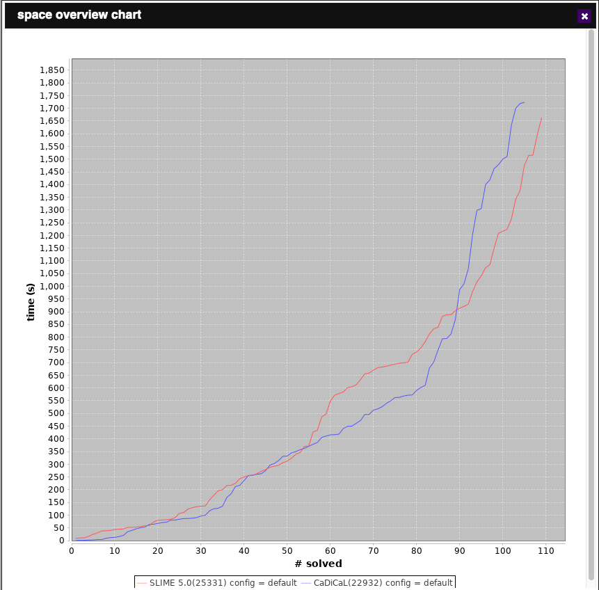
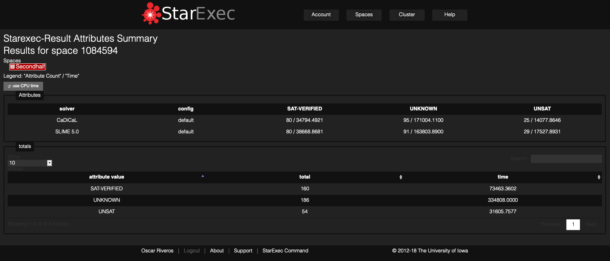
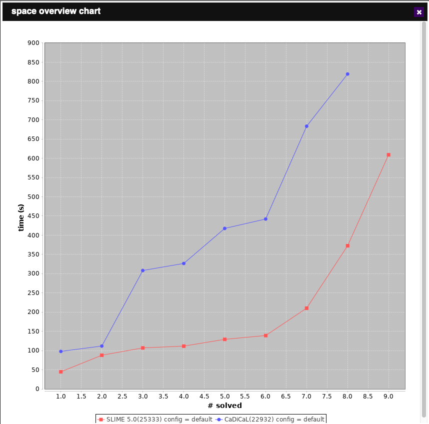
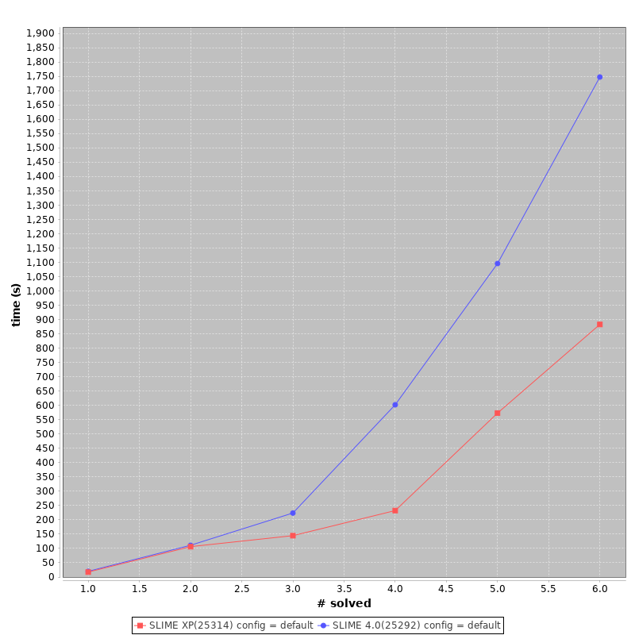
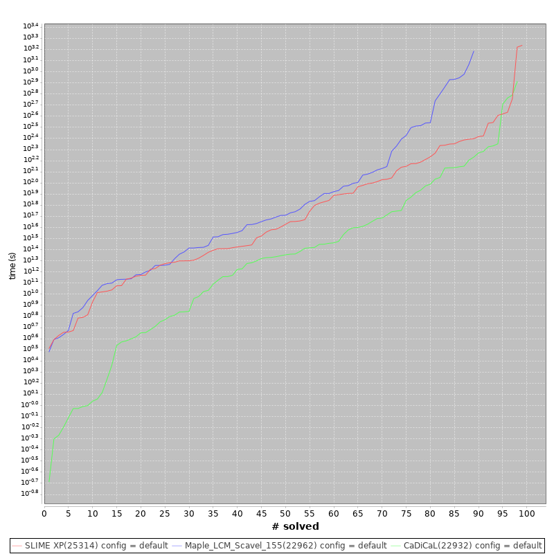
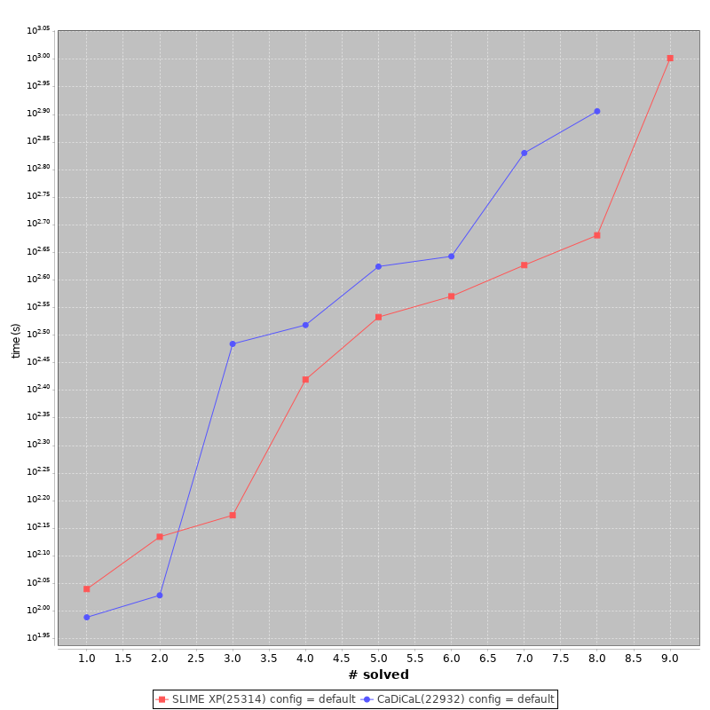
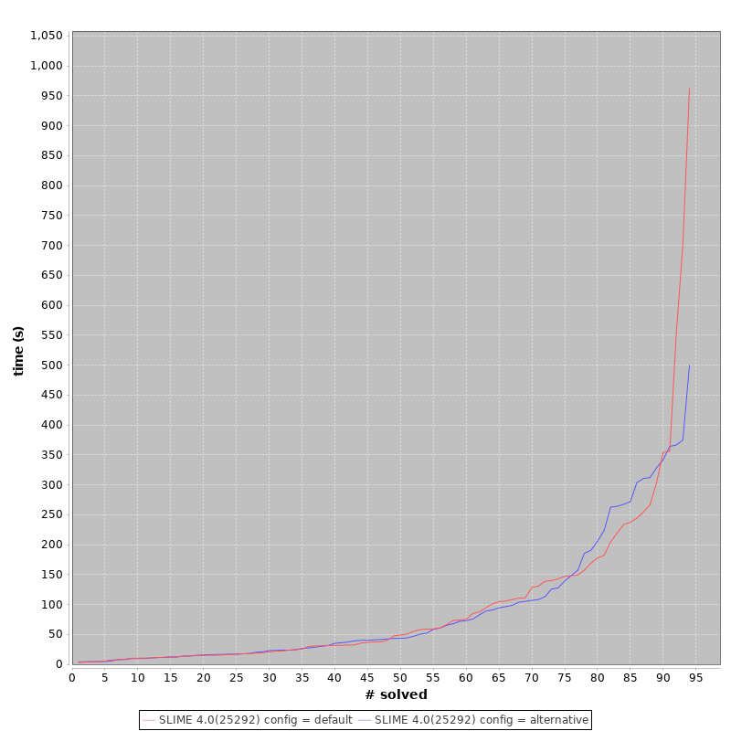
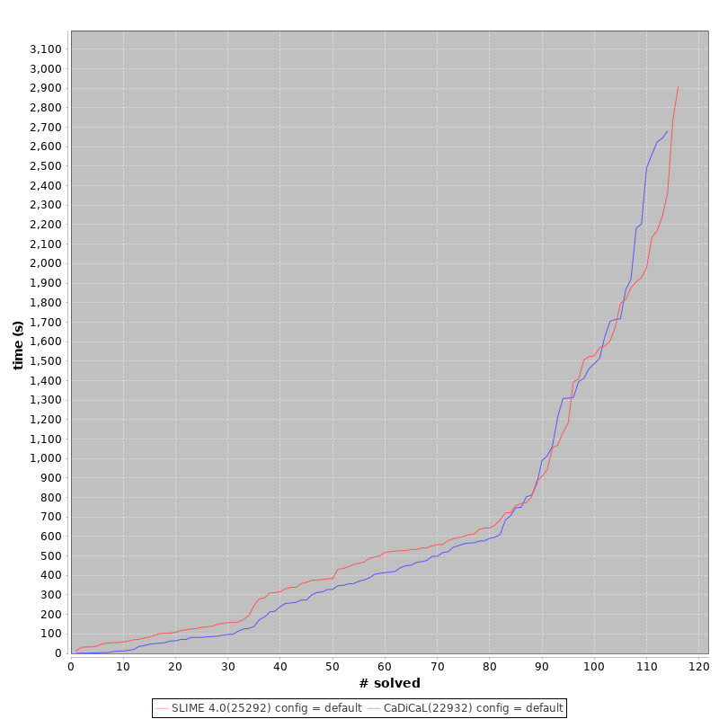

SLIME 4.1.1: The most advanced SAT Solver on the planet.
- More performance.
- Pre Release from 5.0 version.



SLIME 4.1: The most advanced SAT Solver on the planet.



SLIME 4.0.1: Today the most advanced SAT Solver on the planet.
- SLIME 4.0 vs 4.0.1 SAT Race 2006.
- Increase general performance and scope of solvable instances.

SLIME 4.0: Today the most advanced SAT Solver on the planet.
- SLIME vs The Winner of the SAT Race 2019.
- Increase performance and scope of solvable instances.
- Better performance at 3000 seconds than the winner of the SAT Race 2019 on new Benchmarks.
- Better UNSAT solving.


SLIME 3.1.1: The Unofficial State of The Art
- SLIME vs The Winners of the SAT Race 2019.


SLIME 3.1: The Unofficial State of The Art
- Support long term executions without overflow on counters and variables.
- The State of The Art Performance.


SLIME 3.0: The Unofficial State of The Art
- Implementation of Alternating Dual BOOST Heuristic.
- The State of The Art Performance.


SLIME 2.2: A Free World Class Multiplatform High Performance SAT Solver
- Windows support - include a precompiled executable
- usage: slime_cli cnf-file [sat-model-file] [unsat-proof-file]
- 2.0 performance
SLIME 2.1: A Free World Class High Performance SAT Solver
- Full ANSI C++
- Remove ZLib dependency
- Extreme simplification of unused components
- 2.0 performance
- More compatibility with all OS. (Full Raspbian Compatibility)
SLIME 2.0: A Free World Class High Performance SAT Solver
SAT Race 2015
- v1.0 PAR-2 605079.2646
- v2.0 PAR-2 591812.0663
(The solvers will ranked using the PAR-2 scheme: The score of a solver is defined as the sum of all runtimes for solved instances + 2*timeout for unsolved instances, lowest score wins.)


SLIME: A Minimal Heuristic to Boost SAT Solving
On CDCL Based SAT Solvers the trail size is strictly related to progress or to the total conflicts on the current assignment,
such that if the trail size is the same that the number of variables, then current assignment is valid.
On the other hand, in the selection of the current variable it is necessary to assign a predetermined polarity to the resulting literal, which in most implementations is a predefined value.
SLIME implement a simple heuristic with minimal complexity, that correlated the trail size and the polarity of the current variable to assign.
The selection of variable is not related to trail size, this decouple the both concepts.